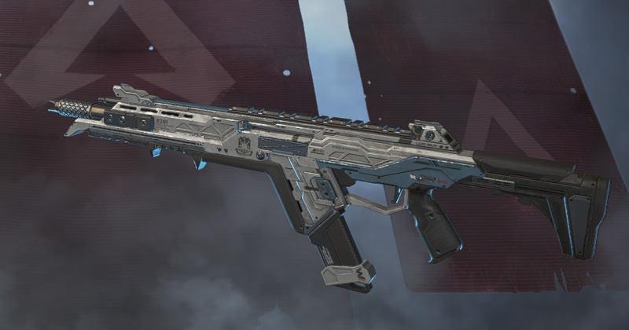

APEXについての
解説です！
改めて、エイペックスとはどういうゲームかを解説します。エイペックスレジェンズ、ApexLegendsとは、最大３人のチームで、60人20チームのバトルロイヤルを楽しむゲームです。特に、エイペックスレジェンズはその高速で爽快感のある操作感が特徴です。 戦闘が進むスピードが他のバトルロイヤルゲームよりも早く、爽快感のあるゲーム体験が楽しめます。
３人という人数が絶妙で、4人集まってしまうと空気が変になりますが、基本気持ちよくマルチプレイすることができます。
エイペックスレジェンズのゲームモードは１つではありません。荒野行動のデスマッチほどのルールの変更は無いのですが、異なるゲームモードで楽しむことができます。
デュオとトリオという２つのモードがあります。負けても不利益はなく、楽しみながらゲームになれることができます。 キャラ、武器の特性、マップに慣れるのにもってこいです。
ランクマッチは、本格的に戦って、勝つことを楽しむゲームモードです。 下から、ブロンズ、シルバー、ゴールド、プラチナ、ダイヤ、マスター、プレデターというランクがあり、プレイヤーはいずれかのランク帯に所属させられ、基本的にそのランクの中でしかマッチングしません。 そのため実力が拮抗した戦いが楽しめます。また、ランクマッチ、ランクマの良さは、パーティーを組んで(友人とプレイ)いなくても、プレイヤーが退出できないことです。 というのは、カジュアルだと戦闘不能となったメンバーは抜けてしまうのが常識となってしまっています。生き残ったメンバーによっては復活させることができるかも知れない状態ですが、待つのが面倒なので抜けてしまうのです。 しかし、ランクマッチでは、死んでからすぐにマッチを退出するのはペナルティの対象となり、10分間プレイできない状態となります。この10分という時間はその犯行の回数で増えていきます。
射撃練習場は、すべての武器、アタッチメントなどが揃っている練習スペースのようなものです。簡易的な的もあります。ゲームを起動してすぐだと調子が出ないことがよくあります。そのためここでちょっとだけ試し打ちをして、慣れるといった使い方があります。
また、ハロウィンやエイプリルフールなど、期間限定のゲームモードも時々配信されます。
まず、武器にはフィールドに落ちている普通の武器と、ケアパッケージからしか入手できないケアパケ武器があります。ケアパケ武器は銃弾を補充することができません。しかし、最初から強い状態で利用できます。また、ケアパケ武器はシーズンによって変化します。エイペックスレジェンズは、基本的には最初は素手で降下する。降下し終わってすぐ、いわゆる初動、開幕と言われる時間に、どのような武器を握ればよいか迷っていては負けてしまう。 そのため、武器についての詳しい情報は別ページでまとめました。 
今まで書いた文は、対して強くも無いやつが書いた文です！当てにならない情報もあると思います！ゲームは楽しみながらプレイしようとするから楽しめるのであり、最初からガチガチに肩に力を入れてプレイしては楽しめるものも楽しめず、勝てるものも勝てません。 まずは楽しむところから始めましょう！勝つのが当たり前なんて人はひとりもいませんから、永遠と楽しむためにゲームすることになりそうですが、それもそれでありだと自分は思います！ とりあえず、楽しみながら、友達と勝ちたくなってきたらちょっと頑張ってみる、みたいな感じで、とにかく楽しみながらプレイしてみてください！！ ここまで読んでいただきありがとうございます。